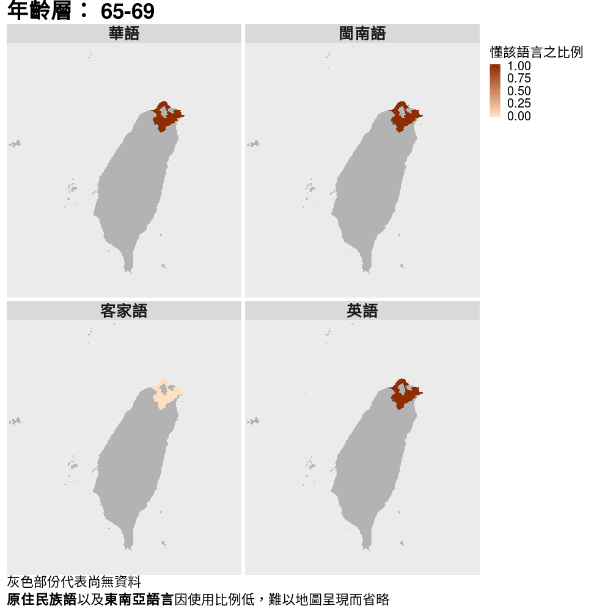
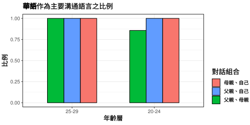
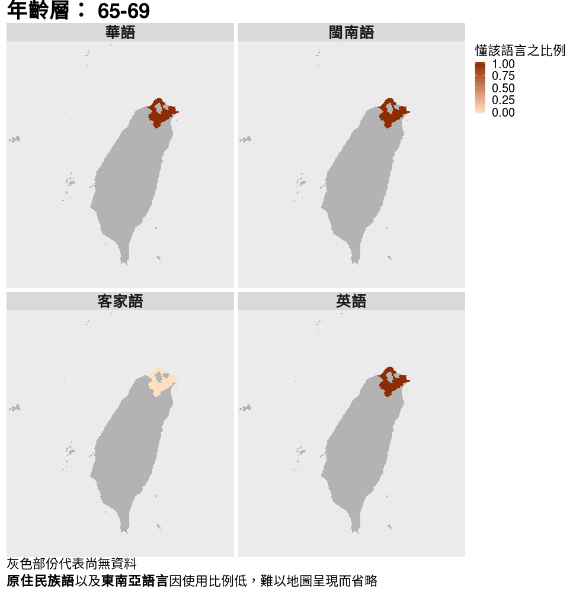
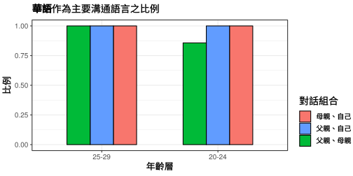

上次更新：2018-06-10
前言
此網頁是為了臺灣地區語言使用調查這份問卷而設計的。臺灣地區語言使用調查是為了解臺灣各語言的使用情況，特別是華語(國語)以外的弱勢語言；這個網頁則是為了將問卷的結果即時和大家分享，希望藉此引起大家對臺灣多語社會以及弱勢語言的關注。
接下來將透過幾句簡短的文字、幾張簡潔的圖片1描述臺灣語言的現況2，並且會著重在跨年齡層以及跨世代的現象。
一些文字一些文字一些文字一些文字一些文字一些文字一些文字一些文字一些文字




上次更新：2018-06-10
此網頁是為了臺灣地區語言使用調查這份問卷而設計的。臺灣地區語言使用調查是為了解臺灣各語言的使用情況，特別是華語(國語)以外的弱勢語言；這個網頁則是為了將問卷的結果即時和大家分享，希望藉此引起大家對臺灣多語社會以及弱勢語言的關注。
接下來將透過幾句簡短的文字、幾張簡潔的圖片1描述臺灣語言的現況2，並且會著重在跨年齡層以及跨世代的現象。
一些文字一些文字一些文字一些文字一些文字一些文字一些文字一些文字一些文字

